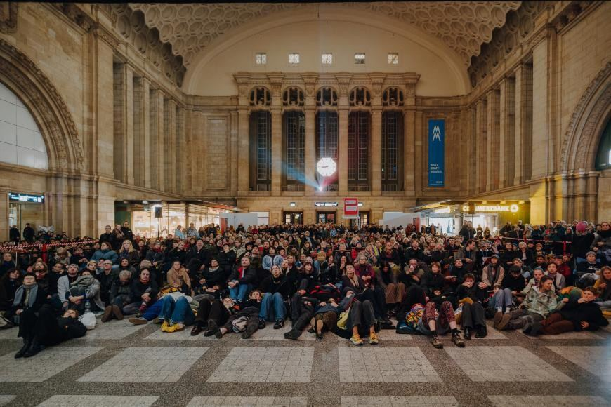

Festivals · Film
DOK Leipzig 2027
- Dates
- –
- Location
- Leipzig, Germany
- Format
- In-person
- Category
- Film
- Industry
- Documentary and animation film festival
- Expected attendance
- 57,000
- Official website
- https://www.dok-leipzig.de/
About
Dates are local to the host city (Central European Time, UTC+1 / UTC+2 in summer).
Topics: documentary film, animation, film festival.
Official DOK Leipzig site (fetched 24 Nov 2026): “Mehr als 57.000 Besucher*innen bei DOK Leipzig 2026” and “mehr als 57.000 Besucher*innen und 2.100 Akkreditierte” for the 2026 edition. Recorded as 57,000 (organiser floor figure for the latest edition).
Sources
- Official — https://www.dok-leipzig.de/